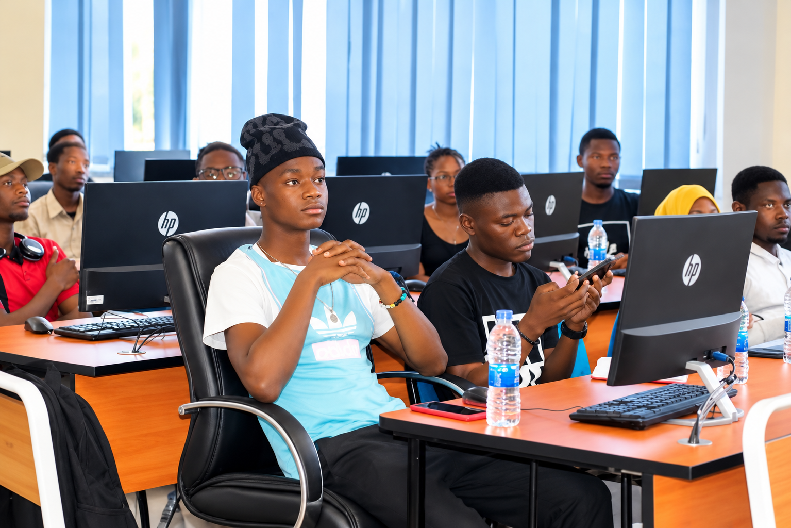

Sudents Embrace Digital Technology
Published: 19 October 2026
Students are using digital technology to improve learning and access information.
They use smartphones, laptops and the internet to search for information, read notes,
attend online classes and communicate with lecturers. Digital technology helps students
learn news things and complet their assignments more easily.
However, some students face challenges such as poor internet connection, high data cost and
lack of digital devices. Dispite these challenges, students believe that digital technology
is more important for their education and future careers. They have called on their institutions
to provide better internet access and affordable digital services to support learning.
Reported by Loveness Nyandula